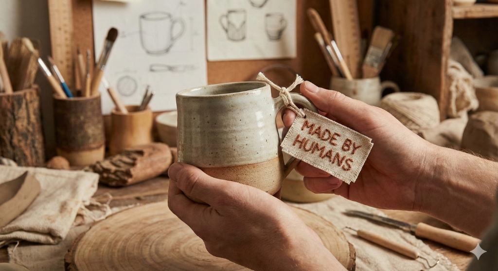

The Human Touch: Why "Made by Humans" will become a premium label in 2030
Rediscovering the value of human creativity in an era of automation.

Authenticity at your fingertips: A handcrafted mug bearing the "Made by Humans" mark.
When the hum of a factory floor is replaced by the gentle clink of a hand‑crafted tool, a quiet revolution begins. The promise of a future where every item carries a story, a touch, a heartbeat is more than a marketing slogan – it is a cultural shift that invites us to rediscover the value of human creativity. 🌱
In a landscape dominated by algorithms that churn out identical products at breakneck speed, the “Made by Humans” label has emerged as a beacon of authenticity. Consumers are increasingly craving objects that feel alive, that bear the unmistakable fingerprints of their maker. From hand‑woven textiles that echo the rhythm of a loom to bespoke garments tailored to the nuances of a body, the appeal lies in the uniqueness that mass production simply cannot provide.
The rise of this trend is not only about aesthetics; it is a statement of intent, a rejection of the impersonal and a celebration of the intimate connection between creator and consumer. Every handcrafted piece tells a narrative that machines cannot replicate, and that narrative is becoming the currency of trust and loyalty in a world where transparency matters more than ever. 🎨
The Custodians of Craftsmanship
Companies that embrace human involvement in their production pipelines are already reaping the rewards of this shift. By positioning themselves as custodians of craftsmanship, they differentiate their brands in a crowded marketplace. The human touch signals a commitment to quality, sustainability, and social responsibility, resonating with a generation that values ethical consumption.
Moreover, the rise of e‑commerce and social media has leveled the playing field, allowing artisans to showcase their stories directly to a global audience. This direct connection not only builds emotional bonds but also provides immediate feedback loops that drive continuous improvement and innovation. As a result, businesses that weave human stories into their products enjoy higher perceived value, stronger customer loyalty, and a resilient brand identity that can withstand the volatility of technological disruption. 💡
The Future: Hybrid Harmony
Looking ahead to 2030, the “Made by Humans” movement is poised to evolve beyond a niche preference into a mainstream expectation. The convergence of advanced manufacturing tools with traditional techniques will create hybrid processes that empower artisans to scale without sacrificing authenticity. Imagine a world where a 3D printer is guided by the hand of a seasoned craftsman, producing bespoke items that combine precision with artistry.
In such a future, the human element will not be replaced but amplified, enabling creators to push the boundaries of what is possible while preserving the soul of their craft. The label will stand as a badge of honor, a testament to the harmonious blend of technology and humanity that defines responsible innovation. 🚀
What do you think: will you seek out “Made by Humans” products in the future?